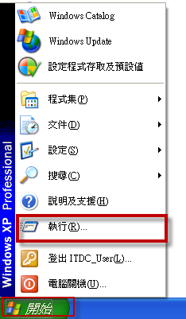
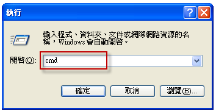
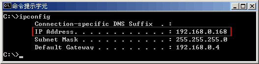
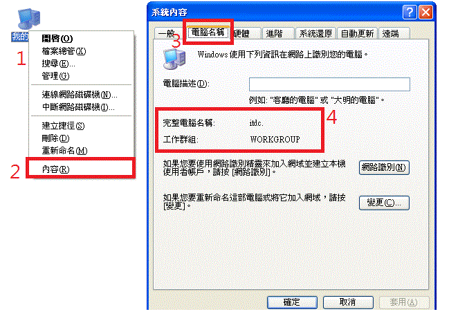
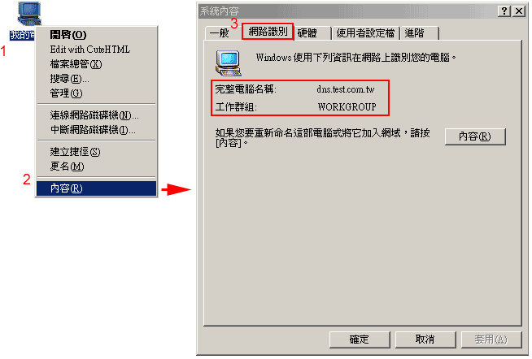
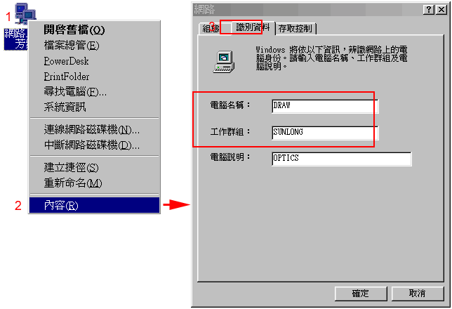

| 取得 IP位址 方法 |
| Windows XP |
| 點選開始，按下執行。有執行視窗輸入「cmd」，在 DOS視窗下，輸入c:/> ipconfig, 即可得到。 |
|   |
| 取得 電腦名稱 / 電腦群組 方法 |
| Windows XP：桌面：我的電腦 ( 按右鍵 ) ＞ 選內容 ＞ 選網路識別 |
|  |
| Windows 2000：桌面：我的電腦 ( 按右鍵 ) ＞ 選內容 ＞ 選網路識別 |
|  |
| Windows 98：桌面：網路上的芳鄰 ( 按右鍵 ) ＞ 選內容 ＞ 選網路識別 |
|  |